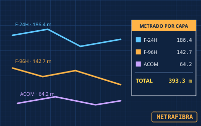

Metrado de fibra por capa
Suma longitudes de líneas, polilíneas y arcos agrupadas por capa y arma la tabla de metrado con su total. Adiós calculadora.
Uso: Escribe METRAFIBRA, selecciona la red y da el punto de la tabla.
Descargar METRAFIBRA.lsp